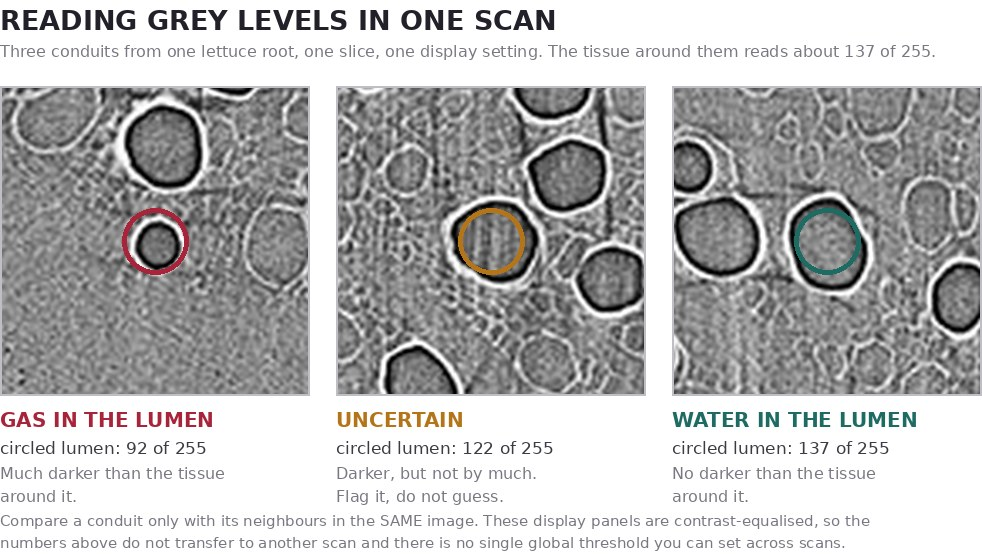

BIO 332 · Plant Physiology · CSUMB · Fall 2026
The water path
One molecule of water, from the soil to the sky, and everything a plant builds along the way. Each stop below is a part of the course. Every number on this site carries a source, and every model says what it leaves out.
Start here · one question, four figures, about five minutes
Why can a plant standing in wet soil still be in water stress?
Almost everything in this course hangs off that question, and you can get to the answer in four moves. Each link below opens one figure with one thing to do. Come back here after each one.
- Find out how hard the air pulls. Open Fig 5.1, the VPD calculator and press the Fresno chip, then the Salinas chip. The vapour pressure deficit goes from 4.82 kPa to 1.08 kPa. Same water in the soil either way; the sky is not the same.
- Now put a plant under that sky, with its roots in wet soil. Fig 5.4 opens on Fresno air with the soil at −0.030 MPa, which is as wet as it gets. Read the leaf Ψ at 14:00: −0.93 MPa, stomata 29 % open. Press Salinas without touching the soil: −0.46 MPa, 63 % open. That is the answer. Water moves down a difference in water potential, and the air sets the far end of it. Wet soil only fixes the near end.
- See what that tension costs. Fig 6.1 opens at −1.73 MPa on a grapevine imaged alive. Half the stem's conductivity is already gone, and 89 % of the petiole's. The plant does not get that back while it is under tension.
- Run it for a month. Fig F.1 opens on 28 hot dry days with no irrigation. Ten days without turgor, past P50 on day 19, 100 % loss of conductivity by the end. Then drag Irrigate every N days to 7 and watch all four numbers go back to nothing.
That is the spine of the course: the sky pulls, the soil supplies, and the plant sits between them deciding how much to open. Everything else is the detail of how it does that. Now take the stops below in order — Stop 1 is the anatomy you need before any of the rest makes sense.
Built for BIO 332 by Dr. Caetano Albuquerque, CSUMB, with a review board on leaf hydraulics, grapevine water relations, xylem imaging and design. Works on a phone. Your progress and predictions stay in this browser only.
Map › Anatomy
Stop 1 of 8 · Anatomy
Read a section
Four organs, the same three tissue systems. Name every region, then switch to Test and find it without labels. It is the skill you use every time you annotate a scan.
This is the first interactive of the course, running inside this site. It will be rebuilt in the site's style after Midterm I. Open it full screen.
Map › Annotation
Stop 2 of 8 · Research module · Annotation
From zero to a submitted export
Every step, in order, for your group: install the app once, load your two petiole images, trace five classes, export two ZIPs, hand them in on Canvas. Read it on your phone, work on your laptop.
Before you start: the words on this page
- The app
- Segmentation Annotation Studio, built by the beamline 8.3.2 team at the Advanced Light Source, Lawrence Berkeley National Laboratory (LBNL). It runs on your own laptop at 127.0.0.1. No account, and nothing leaves your laptop while you work.
- Terminal
- The text window that starts the app (PowerShell on Windows). It must stay open the whole time you annotate.
- Class
- One tissue label. You type all five in one line; the app gives each a colour and a number key.
- Contour
- One closed outline you draw around one thing.
- Sample
- One image you loaded into the app. Your group has two: one slice from the dry scan and one slice from the rehydrated scan.
- Group ID
- Your Canvas group number written as G plus two digits: Canvas group Annotation 7 is G07. It is the only name that goes on your work.
Start hereIf the app already runs on one laptop in your group, skip to step 3. If not, do step 2 on one laptop only. One working laptop per group is enough.
0. What you are doing, and why it matters
One grapevine petiole, the stalk between a leaf and the shoot, was scanned with X-rays at the Advanced Light Source twice, about ten and a half hours apart: once dry and once after rehydration. Your group gets one slice from the dry scan and one slice from the rehydrated scan. The question is whether gas-filled space in the xylem and in the pith is different between the two scans.
Your outlines give the class two numbers for every image:
- Embolised fraction = xylem_embolism ÷ (xylem + xylem_embolism)
- Gas-filled pith fraction = pith_gas ÷ (pith + pith_gas)
Both are ratios of areas, so they do not depend on how much the section shrank. Your outlines also become training data for LBNL: a model learns to find xylem from what you draw, so a careful outline teaches it something true and a careless one teaches it something false.
Accuracy is never graded. Care and completeness are, and so is being on time. Care means every outline is closed and every bundle you could see is drawn. Work that misses these comes back to be redone, rather than being marked down.
Group ID only, never a name. Your files go to Berkeley Lab. Do not type a person's name anywhere in the app or in a file name.
Keep the textbook closed while you draw. Draw what is on your screen, not what a diagram says should be there.
1. Before you start: what you need
- A laptop, Mac or Windows. The app does not run on a phone or tablet.
- Charged, or plugged in. If the laptop sleeps, the app stops and you have to start it again.
- Permission to install software on that laptop. You will install Node.js.
- Google Chrome.
- A place for the app folder in your home folder, not on the Desktop or in Documents if those sync to iCloud or OneDrive. A synced folder breaks the app.
Time. Installing takes about 25 minutes, once. After that, starting the app takes a minute. The course materials do not set a time per image; the class had 15 minutes of in-class annotation on 21 September. Plan on more than that at home, because a slice has about sixteen bundles.
2. Install once
One laptop per group. On a Mac, do steps 1 to 6. On Windows, do steps 1, 2 and 7.
- Download the app from go.lbl.gov/annotation-app. Unzip it. Put the folder in your home folder (for example, ~/AnnotationStudio) and leave it there. Moving it later breaks the install.
- Install Node.js from nodejs.org/en/download. If Terminal was already open, quit it and open it again afterwards.
- Open Terminal (Mac: Applications, Utilities, Terminal).
- Go into the app folder. Type cd and a space. Do not press Return yet. Drag the app folder from Finder into the Terminal window; its path appears. Now press Return.
cd - Start the app.
If Terminal says permission denied, run this once, then run ./start_all.sh again:
./start_all.shThe first run is slow. It sets up its own copy of Python, a local server and a model. When it is ready it prints a list of addresses, including a Frontend line.chmod +x start_all.sh - Leave Terminal open. Closing the window stops the app. Go to step 3.
- Windows. Open PowerShell in the app folder and run:
Leave the PowerShell window open.
powershell -ExecutionPolicy Bypass -File .\windows\start_all.ps1
That command comes from the LBNL tutorial. The course install guide was written on Macs and has no Windows walkthrough yet. If you get the app running on Windows, tell Dr. Albuquerque what you did so the next student can follow you.
3. Every session: start, open, connect
- Open Terminal, type cd and a space, drag the app folder in, press Return. Then run:
(Windows: the PowerShell command from step 2.7.)
./start_all.sh - Open Chrome and type the address exactly, including http://:
If the Frontend line in your Terminal shows a different number after the colon, use your number. The app moves to another port when 5173 is busy.
http://127.0.0.1:5173 - In the Load Data tab, press Connect. This connects the page to the local server the Terminal started.
Older class sheets said localhost:5173. On some Macs "localhost" is sent to the newer internet address format (IPv6) and the page never connects. 127.0.0.1 is the same laptop, written so that cannot happen. Also, do not open the addresses ending 8010 or 8011. Those are the app's server, not the page you draw on.
4. Set up: classes first, then your two images
Type the class list before you load any image
In the Load Data tab, in the class list box, type or paste exactly this. It is five names, four commas, no spaces, all lowercase:
The class list, and the colours the app will give it
The app gives colours by position in the list, so every laptop that types the same line shows the same colours.
xylem,xylem_embolism,phloem,pith,pith_gas| Key | Class | App colour |
|---|---|---|
| 1 | xylem | blue |
| 2 | xylem_embolism | orange |
| 3 | phloem | green |
| 4 | pith | red |
| 5 | pith_gas | purple |
The number is printed on each swatch because the number is the reliable route: the app binds keys 1 to 5, and two swatches that look alike to you still have different numbers. Colour is only for display. The class name is what goes into the export, so the spelling must be exact. The demo video shows epidermis as a sixth class. Leave it out; it was dropped on 20 September.
Find your group ID and your two images
- On Canvas, find your group. Group Annotation 7 is G07.
- Open the image folder linked from the Canvas annotation page and search it for your tag, for example _G07. You should find two PNG images: one from the dry scan and one from the rehydrated scan. Download both, and do not rename them.
- If a search for _G45 finds nothing, you are in an old folder. Tell Dr. Albuquerque before you start drawing.
Load them
- Still in Load Data, drag and drop both PNGs into the app. Each image becomes one sample.
- Go to the Browse tab, check the preview, and press Open in Annotate (or the pencil icon) on the first image.
The LBNL tutorial shows no field in the app for a person's name. Your group ID goes on the exported file name in step 6. If anything in the app ever asks for a name, type your group ID.
New images may be posted for later rounds. Canvas says which images are due this week. Check Canvas for this week's due date.
5. Annotate
Five settings before you draw a line
- Clip to other classes: OFF. Check that the box is unticked.
- Merge overlapping same class: OFF. Keeps sixteen bundle outlines as sixteen separate objects.
- CLAHE: yes, if it helps you see. CLAHE evens out contrast locally so faint edges show. Brightness, contrast and gamma are fine too. They change only what you see, never the saved image.
- Sharpen: never. Sharpening invents edges that the scanner never recorded, and you would trace something that is not there.
- No epidermis. Do not draw the outer layer.
Zoom out to find, zoom in to trace
Zoomed out, the ring of bundles, the pith in the middle and the bright fibre caps are easy to see. Zoomed in, a water-filled conduit disappears into the tissue around it. So find each bundle zoomed out, then zoom in only to trace its edge. The beamline scientists who built the app say zooming out helps human eyes more than any filter does. Keys 1 to 5 switch the active class.
Practice before you annotate
Nothing below is graded and nothing below is submitted. It is a drawing, not a scan, so there is a right answer here — which is exactly why it is safe to be wrong on it. Get the five calls wrong here, read why, and then go and be careful on your own slice.
In a CT slice, what does a black lumen prove?
The answer: gas rather than liquid water. That is all the image proves.
X-ray absorption tracks density. Gas absorbs almost nothing, so a gas-filled reads black. That is the whole measurement. Everything past "gas" is inference.
Not "it cavitated in the living plant." Cutting xylem under tension can pull air into conduits that were working (Torres-Ruiz et al. 2015, source), so some black lumens can be made by the knife. Refilling and drying during handling can do it too. The image dates nothing.
Not "it is dead tissue." Every mature xylem is already dead, water-filled or not. Death is not what changed between the two scans.
This is why the class list says xylem_embolism and not cavitated: is a state you can see, is an event you did not watch.
Knipfer et al. 2016 Plant Physiol 171: 1024; Torres-Ruiz et al. 2015 Plant Physiol 167: 40. MEASURED
Practice before you annotate
A drawn petiole, not a micrograph. Five calls, in the order they get harder. Practice only: nothing here is graded or submitted.
- epidermis, thick wall
- bright = dense wall
- mid grey = water
- black = gas
- Position disambiguates identical greys. A black lumen inside a bundle is an embolised conduit. A black lumen out in the middle of the pith is a . Same grey, different call. Nothing in the pixel value tells you which; only where it sits does.
- Water-filled conduits are nearly invisible, and that is the research problem, not your failure. Press Show me what I'm missing and every water-filled conduit is outlined; press it again and they vanish back into the tissue. That disappearance is the reason this class is annotating at all.
- In the app you outline the whole bundle as one xylem contour. Here you click conduit by conduit, because you have to see each lumen before you can decide which ones get an xylem_embolism contour on top.
- The and the are drawn but are not classes. Clicking them is not a mistake to feel bad about; it is the confusion this exercise exists to name.
ILLUSTRATIVE This is a drawing, not a micrograph. Every region was placed by code, so the ground truth is exact and unarguable — which a real scan never is. It is not traced from any scan, carries no scale bar, and nothing measured is derived from it. Layout follows a grapevine petiole: kidney-shaped outline with an adaxial groove, a ring of ten vascular bundles, phloem outboard of the xylem under a fibre cap, pith in the centre. Grey levels follow the reading key in Fig A.3: Knipfer et al. 2016 Plant Physiology 171: 1024, "water and air filled tissue appears in light and dark grey, respectively." Class names and colours match the list you type into the app, Fig A.1.
What each class looks like, and how many contours
Bright is dense wall. Light grey is water. Black is gas.
| Class | What you see | How to draw it |
|---|---|---|
| xylem | A cluster of conduits: thick bright walls, lumens grey (water) or black (gas). | One contour per bundle. Follow the outer wall of the outermost conduit all the way round. Cross the gaps between conduits with straight lines. Do not follow the dark holes inside. |
| xylem_embolism | A conduit whose lumen is pure black, much darker than the cells around it. | One contour per black conduit, drawn on top of the bundle's xylem outline. |
| phloem | Small thin-walled cells on the outer side of each bundle, between the xylem and the bright fibre cap. | One contour per bundle. |
| pith | The centre: a lattice of large, thin-walled, similar-sized cells. | One contour. Between two bundles, run a straight line from the pith-side edge of one xylem outline to the next. |
| pith_gas | Pith cells that read dark: gas instead of water. | Drawn on top of the pith outline, one contour per dark patch or cell. The Magic tool can pick one up in a click. |
Because clipping is off, the embolism and pith_gas contours sit on top of the bigger xylem and pith contours rather than cutting holes in them. A black lumen in the middle of the pith is a pith cell; a black lumen inside a bundle is a conduit. Position tells you which. The reading key for grey levels follows Knipfer et al. 2016, Plant Physiology 171: 1024: "water and air filled tissue appears in light and dark grey, respectively." MEASURED

The bright fibre cap on the outer face of each bundle is no longer a class of its own. The course materials have not said whether it goes inside your phloem outline or stays outside it. Use it to find the bundle. Follow what Dr. Albuquerque says in class or on Canvas, and do it the same way on both images.
When you are not sure
Earlier class sheets had a "not sure" class. The five-class list does not, and the course has not yet said how to flag a guess this round. Check the Canvas assignment page. Two rules still hold:
- Do not skip a bundle you know is there. Zoom out, find its fibre cap and the ring of cells around where it should be, and outline it. In the data, a skipped bundle looks like one you missed, and that is the error that costs the project most.
- If you cannot see a conduit you know should be there, you have not failed. Water-filled conduits are nearly invisible on these scans. That is the research problem.
How long to spend
Care beats speed. Three careful bundles teach the model more than twelve sloppy ones. Aim to finish every bundle you can see on both images, and draw the dry and the rehydrated image with the same care. If you take more care on one of them, you can no longer compare the two.
6. Export and submit
- With the first image open, open Export and choose Current sample only. Do not choose "All Annotated Samples".
- The format is DINOv3. You do not need to choose it.
- Press Download ZIP.
- Open the second image and repeat. You now have two ZIPs, one per image.
- Add your group tag to the end of each ZIP's file name, for example _G07. Change nothing else in the name.
- On Canvas, one person submits for the whole group: a single submission to the group assignment, with both ZIPs attached. Canvas accepts only .zip files.
The app keeps everything on your laptop. Until both ZIPs are on Canvas, your work exists only there. Check Canvas for this week's due date.
7. When something goes wrong
Find what you see in the left column. Commands go into Terminal, inside the app folder.
| What you see | Why | Fix |
|---|---|---|
| A tiled welcome page, "Explore from your web browser" | You opened the server (8010 or 8011), not the app | Go to http://127.0.0.1:5173, or the Frontend number your Terminal printed |
| Blank page at 5173 | The app is still preparing itself | Wait 10 seconds, reload once |
| Browser cannot connect, after it worked before | Terminal window closed, or the laptop slept | Run ./start_all.sh again |
| Chrome cannot connect to localhost:5173 | localhost goes to IPv6 on some Macs | Type http://127.0.0.1:5173 |
| permission denied: ./start_all.sh | The script is not marked as runnable | chmod +x start_all.sh, then run it again |
| command not found: node | Node.js missing, or Terminal not reopened after installing | Install Node.js, quit and reopen Terminal |
| Connect spins and fails | The server port in the app does not match the one in Terminal | Type the Tiled port your Terminal printed |
| Port numbers are not 5173 and 8011 | Something else was using the port, so the app moved | Use the numbers your own screen prints |
| disk I/O error, a wall of red mentioning sqlite3 | The folder is in an iCloud-synced place | Move it to ~/AnnotationStudio, then run rm -rf .tiled and rm -rf .venv, and start again |
| bad interpreter: No such file or directory | The folder was moved after the first install | rm -rf .venv, then start again |
| TypeError: unsupported operand type(s) for | | It is running on the old Python that ships with macOS | rm -rf .venv, then start again so it builds its own Python 3.12 |
| ModuleNotFoundError | A package failed to install | rm -rf .venv, then start again |
| UnrecognizedDatabase or unrecognized revision | Old catalog left by an earlier version | mv .tiled .tiled_old, then start again |
| llvmlite needs CMake tools to build | Terminal is running in Intel mode (Rosetta), or the Mac is an Intel Mac | Run uname -m. If it says arm64: in Finder, Get Info on Terminal, untick "Open using Rosetta", reopen Terminal, rm -rf .venv, start again. If it says x86_64: run grep -n "tiled" start_all.sh and send the output to Dr. Albuquerque. Do not guess. |
| cat: backend/requirements.txt: No such file | A known bug in the app's start script | Ignore it if the app still starts |
Every row was seen on a student laptop in this class, September 2026.
8. Check your understanding
Inside a bundle you find a round conduit with a bright wall. Its lumen is the same grey as the cells around it. What do you draw?
The answer: nothing extra. It is a water-filled conduit, already inside the bundle's xylem outline.
Brightness tracks density. The dense wall reads bright. Water absorbs X-rays about as much as the living cells around it, so a water-filled lumen matches their grey. Gas absorbs almost nothing, so an embolised lumen reads black. Only black lumens get an xylem_embolism contour.
Compare a conduit only with its neighbours in the same image. Every image in the set was converted with one shared contrast window, so black means gas in the dry image and in the rehydrated image alike. That is why sharpening and per-image tricks are banned: they would change what grey means.
Knipfer et al. 2016 Plant Physiol 171: 1024. MEASURED
The class dataset will be used to measure how well annotators agree. Why is your accuracy not graded?
The answer: grading accuracy would make you draw what you think we want.
There is no answer key for most of these slices, and experts disagree too. In a published root study, the two most experienced annotators agreed at a Lin's concordance of 0.56 and the two least experienced at 0.65, where 1.0 is perfect agreement. How much careful people disagree is one of the things this class measures. If accuracy earned points, everyone would copy the expected answer, and the agreement number would measure obedience instead of perception.
The model does not fix mistakes. It learns them. That is why care and completeness are graded and a careless slice comes back to be redone.
Handy et al. 2024 Plant Methods 20: 154. MEASURED
9. What your numbers can and cannot say
They can say whether the embolised fraction and the gas-filled pith fraction differ between the dry scan and the rehydrated scan when every group's slices are pooled. That is a comparison of two sets of slices, one from each scan.
They cannot say that a particular conduit refilled. The two scans do not cover the same stretch of the petiole. Your two images are one slice from each scan, not the same level before and after. Compare class totals, not your two slices against each other.
An embolised area fraction is not the percent loss of conductivity (PLC). Flow through a tube scales with diameter to the fourth power, so one wide vessel matters more than many narrow ones. Try it in the vessel widget on the Embolism page.
Cutting xylem while it is under tension can pull air into conduits that were working, even under water (Torres-Ruiz et al. 2015, source). Some black conduits in a scan could have been made by the cut, not by the plant. We are still finding out how these petioles were cut. Name this as a limitation in your report.
Nobody has a reliable way to see water-filled conduits against living tissue at these settings. Every group at the August 2026 beamline workshop said so, and none had a fix. So the xylem outline and the black conduits are the easy part. Knowing exactly how many water-filled conduits a bundle holds is the part nobody can do yet.
Map › Water and turgor
Stop 3 of 8 · Water potential and turgor
Turgor through a Salinas day
One cell losing water, one leaf across one day, one plant across a week without irrigation. Solutes mostly set the water potential at which a cell loses turgor; the wall sets how much water it loses getting there.
Built for the 14 and 16 September lectures and reviewed by a six-person board. Its charts are small on a phone; open it full screen and turn the phone sideways. The osmotic adjustment and plant drawing on the Demand page use the same equations in the new style.
Map › Growth
Stop 4 of 8 · Growth
Why a plant grows at night
A cell grows by pushing on its wall until the wall yields. Take a little turgor away and growth stops, long before anything looks wilted. That makes growth the most sensitive readout of water status a plant has.
Before you start: the growth equation in words
- GR = φ (Ψp − Y)
- Lockhart 1965. Growth rate equals wall extensibility times the turgor in excess of a yield threshold. Below the threshold, nothing grows.
- Turgor pressure, positive inside a living cell.
- The yield threshold: the turgor the wall needs before it stretches for good. The cell can move it.
- Extensibility: how readily the wall gives once turgor is above Y.
Lockhart, with a real day of turgor
Where does the yield threshold have to sit for this plant to grow at night and not at midday?
- Drag Y between the two dots: the plant grows only at night. This is the case the lecture argued.
- Switch to the adjusted leaf: the same leaf water potentials now carry more turgor, so the midday dot can clear the threshold.
- Push Y above both dots: no growth at all, without a single wilted leaf.
Check itsources, and what the model leaves outDERIVEDILLUSTRATIVE
Turgor solved from the pressure volume equations with the crop parameters of Bartlett et al. 2012 (πo −0.95 MPa, ε 5 MPa) at the day 1 predawn and midday leaf water potentials of the seven day drying figure (−0.06 and −0.50 MPa). Adjustment −0.29 MPa is the global mean of Bartlett et al. 2014. DERIVED Y and φ ILLUSTRATIVE. Sources
Green, Erickson and Buggy lowered the turgor of a growing Nitella cell by 0.7 atmosphere (0.07 MPa). Growth stopped. Fifteen minutes later it started again, at the lower turgor. What changed?
The answer: the yield threshold fell.
Turgor stayed at the new, lower value. A metabolic, azide-sensitive process lowered Y until the small excess of turgor over Y was restored, and growth resumed. In that cell only a few hundredths of a megapascal of turgor sat above Y, so a step of 0.07 MPa was enough to stop it.
Grapevine does the same thing. When Shackel and colleagues cut transpiration, leaf cell turgor rose by 0.25 MPa within five minutes and expansion sped up, then expansion returned to its original rate with turgor unchanged. Growth does not track turgor one to one because the wall is adjusting too.
Green, Erickson & Buggy 1971 Plant Physiol 47: 423; Shackel, Matthews & Morrison 1987 Plant Physiol 84: 1166. MEASURED
What stops first as a plant dries
Growth, photosynthesis, or a grower's irrigation trigger: which sits closest to wet?
- Lettuce growers irrigate when the soil is still at −0.015 to −0.035 MPa. That is 40 to 100 times wetter than the textbook wilting point of −1.5 MPa.
- In corn, soybean and sunflower, leaf enlargement was already strongly inhibited by −0.4 MPa of leaf water potential.
- In soybean, photosynthesis held until about −1.1 MPa. A corn photosynthesis threshold is not plotted until the companion paper has been read in full.
Check itsources, and what the model leaves out
Boyer 1970 Plant Physiol 46: 233 and 46: 236 (photosynthesis thresholds read from the abstract, MEDIUM CONFIDENCE); Cahn & Farrara, UCCE Monterey tensiometer guide; Cahn et al. 2022 Horticulturae 8: 857; Richards & Weaver 1943 for −1.5 MPa. Soil and leaf values are on different axes of the plant and are shown together only to compare magnitudes.
Check itwhat this stop assumes, and what it leaves out
No measured day and night leaf growth trace for a crop is on this page, because we have not yet read one from a primary source. When we have Schultz and Matthews (1993) for grapevine or a Tardieu maize record in hand, it goes here and the argument in Fig 4.1 goes from conditional to demonstrated.
Go deeperreadings, methods, and what is still argued
Map › Demand
Stop 5 of 8 · Lecture of Monday 21 September
The sky pulls
Air is the driest thing a plant touches. How hard it pulls depends on temperature and humidity together, through the vapour pressure deficit. Wet soil does not protect a plant from a thirsty sky, and that is the core of the Denmead and Shaw result.
Before you start: four quantities and one unit
- Saturation vapour pressure: the most water vapour the air can hold at that temperature. It climbs steeply with temperature.
- Actual vapour pressure: how much it is holding. Relative humidity is ea ÷ es.
- = es − ea
- The gap. This is what pulls water out of a leaf, a towel or a lettuce head.
- Volumetric soil water content, cubic centimetres of water per cubic centimetre of soil.
- kPa
- Kilopascals. VPD is small numbers in kPa; water potential is in MPa. 1 MPa = 1000 kPa = 10 bar. A tensiometer's 30 cbar is 30 kPa, or −0.03 MPa.
Start hereDrag the temperature slider in Fig 5.1 and leave humidity alone. VPD grows even though the relative humidity never changed. That is why a warming climate dries plants out even when the air holds more water.
The VPD calculator
How much harder does a Fresno afternoon pull than a Salinas afternoon?
More controls: leaf temperature
What a leaf actually feels is the leaf to air VPD: es at leaf temperature minus ea of the air. A leaf three degrees warmer than the air, which happens when stomata close and transpiration stops cooling it, faces about 40 per cent more pull.
- Hold humidity at 50 per cent and slide from 20 to 35 °C: VPD goes from 1.2 to 2.8 kPa. Same relative humidity, more than twice the pull.
- Watch the air water potential tile. Even 99 per cent humidity is about −1.4 MPa, drier than a well-watered leaf.
- Fresno at 36.5 °C and 21 per cent against Salinas at 21.5 °C and an estimated 58 per cent: about 4.8 against 1.1 kPa.
Check itsources, and what the model leaves outMEASUREDDERIVED
Data behind the presets
| July | Mean max | Mean min | Afternoon RH | VPD |
|---|---|---|---|---|
| Fresno (FAT) | 36.5 °C | 20.7 °C | 21 % | 4.8 kPa |
| Salinas (airport) | 21.5 °C | 12.8 °C | 58 % est. | 1.1 kPa |
Fresno: NWS Hanford 1991 to 2020 normals; afternoon RH from NOAA Comparative Climatic Data MEASURED. Salinas: NOAA 1991 to 2020 normals via secondary copy; no humidity normals exist for Salinas, so the afternoon humidity is estimated with FAO-56 Eq. 48, taking the night minimum as the dew point DERIVED · ESTIMATE. To be replaced with CIMIS Salinas North station humidity.
es = 0.6108 exp[17.27 T ÷ (T + 237.3)] kPa, FAO-56 Eq. 11 (Allen et al. 1998). Air water potential Ψ = (RT ÷ V̄w) ln(RH), with RT ÷ V̄w = 135 MPa at 20 °C. PHYSICS Sources
Before you press Fresno: a July afternoon in Fresno is 15 °C hotter than in Salinas. How many times harder does the Fresno air pull on a leaf?
The answer: about 4 times, 4.8 against 1.1 kPa.
Saturation vapour pressure more than doubles between 21.5 and 36.5 °C, and the Fresno air is also far drier. Both effects multiply. Reference evapotranspiration, which also counts sunlight and wind, differs by less: July ETo is 8.7 inches at Fresno State and 4.5 at Salinas North, a factor of about 1.9 (Fig 5.2). Why the two ratios differ is a good question to bring to class.
The towel on the line, in numbers
Reference evapotranspiration by month: how much water a well-watered grass surface loses.
- The Salinas Valley is not one climate. July ETo climbs from 4.0 inches at Castroville to 6.5 at Soledad as the fog thins inland.
- Salinas North peaks in June, not July. The July and August marine layer cuts demand, and September is the warmest month in Salinas because the fog retreats.
Check itsources, and what the model leaves outMEASURED
CIMIS station averages, California Code of Regulations Title 23, Model Water Efficient Landscape Ordinance, Appendix A (inches per month). MEASURED · CIMIS
Denmead and Shaw, 1962
Corn in 136 containers sunk in an Iowa field, black plastic over the soil so every lost gram was transpiration, soil water read every day by neutron probe. They asked a simple question: at what soil water content does a plant stop keeping up with the air? The answer was that it depends on the air.
The wilting point moves with the weather
Soil tension at which actual transpiration fell below the potential rate, for days of different evaporative demand.
- On high demand days (6.4 mm per day) the corn fell behind at 0.3 bar, almost field capacity. On overcast days (1.4 mm per day) it kept up until 12 bars.
- Same soil, same crop, same summer: a factor of forty.
- The mechanism: soil conductivity falls steeply as soil dries, so at high flux a steep gradient opens between soil and root, leaf water potential falls, stomata close, and transpiration falls below the potential rate.
Check itsources, and what the model leaves outMEASURED
All three points are stated in the body of the paper, p. 387, and redrawn for this site. The middle one is plotted at 3.3 mm per day, which is the labelled curve in their Figures 3 and 4; the text phrases that rate as "3 to 4 mm. per day". The high-demand point is plotted at 6.4, which is both the labelled curve and the rate the text gives; the paper's own Synopsis rounds it to "6 to 7". Denmead & Shaw 1962 Agron J 54: 385. MEASURED · REDRAWN The paper plots soil suction, its word for tension, on a different axis; here drier is to the right, as everywhere on this site.
Two plants, one day
Same soil, same sky, same leaf water potential. Plant B has loaded solutes through the season. Scrub the day: when do the stomata close, when do the leaves droop, and when do they grow?
Set the air yourself: temperature and humidity
A town chip loads that station's four numbers here. Move any slider and the chips switch to your own air, and the plant, the stomata and the growth readouts all follow it.
There are two standard ways to get ea, and they are not the same equation. With measured humidities you use FAO-56 Eq. 17, the two-humidity form, which is what these sliders use. With no humidity data you take the night minimum as a dew point and use Eq. 48, which is what the two town chips use, because neither station publishes humidity normals. The humidities a chip loads here are that station's own dew point converted back into a dawn and an afternoon value, so the two routes land within about half a per cent of each other in ea once the slider has rounded them to whole per cent. With humidities measured independently of the temperature they would not have to agree at all.
More controls: season and yield threshold
- Salinas, wet soil: scrub from 05:00 to 14:00. The stomata open with the light, leaf water potential falls, turgor dips, and both plants keep growing, fastest at night.
- Switch to Fresno and drag the soil to −0.5 MPa. By mid afternoon the stomata are mostly shut and plant A has lost all its turgor and droops. Plant B, same water potential, still has turgor.
- Watch the evening: turgor comes back over hours, not instantly, because the plant has to refill its own tissues. That is when the leaves expand.
- Compare hours of growth and hours without turgor in the status line, not the growth rates: both plants share one yield threshold, which exaggerates B's speed.
Check itsources, and what the model leaves outDERIVEDILLUSTRATIVE
What this model leaves out
Weather: July normals (Salinas 21.5 / 12.8 °C, Fresno 36.5 / 20.7 °C), sine by day and exponential decay by night after Parton & Logan 1981, dew point held constant (Salinas estimated as the night minimum, FAO-56 Eq. 48; Fresno from 21 % afternoon humidity), VPD from FAO-56 Eq. 11, sunrise and sunset computed for 15 July DERIVED. Air you set yourself takes ea from the two humidities by FAO-56 Eq. 17 instead, through the same code the season figure uses. Stomatal closure with leaf Ψ: half closed at −0.60 MPa, fitted to Albuquerque et al. 2020 Table 2; night conductance 10 % of day (Caird et al. 2007; Dayer et al. 2021). Turgor from the pressure volume equations (ε 5 MPa). Plant B: πo falls 0.0045 MPa per day from −1.00 to −1.40 (Farolfi et al. 2025; Martorell et al. 2015). Conductance, capacitance, Y and φ ILLUSTRATIVE. MODEL OUTPUT · NOT DATA
Same plant, same soil, same yield threshold: the sky is what decides whether it grows today.
Fresno, soil at −0.5 MPa, 15:00. Both plants have the same leaf water potential. Which one has lost all its turgor?
The answer: only plant A.
Leaf water potential near −1.35 MPa is below A's turgor loss point of −1.25 MPa but above B's, which the season has pushed to about −1.9 MPa. Same water potential, same pressure chamber reading, one plant wilted and one still pressing on its walls. The solutes made the difference, not extra water from the soil.
In grapevine this adjustment follows the calendar, not the soil. Irrigated Pinot noir lowered its osmotic potential by about 0.005 MPa per day across the season, and 35 days of water deficit added only 0.03 MPa, not significant (Farolfi et al. 2025). Well-watered Tempranillo adjusted as much as stressed vines: 0.37 against 0.31 MPa in πo, June to August (Martorell et al. 2015). That is why plant B's control is weeks since budbreak, not soil water. Plant A is a hypothetical control: only 13 to 15 per cent of wild species show no adjustment (Bartlett et al. 2014).
Real seasonal data behind plant B
| Material | πo early | πo late | πtlp early | πtlp late | Source |
|---|---|---|---|---|---|
| Tempranillo, water stressed, Jun → Aug | −1.13 | −1.44 | −1.46 | −2.01 | Martorell 2015, Table 3 |
| Tempranillo, well watered, Jun → Aug | −0.95 | −1.32 | −1.33 | −1.76 | Martorell 2015, Table 3 |
| Pinot noir, irrigated field, 75 → 145 days | −1.23 | −1.57 | · | · | Farolfi 2025 |
| Syrah, Davis, Jul → Sep | −1.05 | −1.73 | · | · | Sinclair 2024, Table 1 |
| Merlot, Davis, Jul → Sep | −1.48 | −2.23 | · | · | Sinclair 2024, Table 1 |
| Wild species, global mean shift | −0.29 | −0.44 | Bartlett 2014, n = 207 / 246 | ||
Check itwhat this stop assumes, and what it leaves out
The corn was in containers 24 inches deep, so roots could not explore. Ritchie (1973) found field corn in a weighing lysimeter used at least 80 per cent of its extractable water before transpiration dropped. The direction of the effect is not in dispute; the size of it in an unrestricted root zone is. Teach the mechanism, not the thresholds.
Go deeperreadings, methods, and what is still argued
No pressure volume curve for lettuce has been published in a major journal that we could find. Its osmotic potential, turgor loss point and wall stiffness are unmeasured in a crop worth billions to this valley. A vapour pressure osmometer gives πo from a leaf disc in ten minutes. Want in? Office hours, say lettuce. No lab experience needed.
Map › Embolism
Stop 6 of 8 · Lecture of Wednesday 23 September
When the column breaks
In a transpiring plant, water in the xylem is pulled from above, and a pulled column can fail. A bubble enters, a conduit fills with gas, and that lane of the highway closes. How much tension a plant can take before it loses its lanes is one of the best predictors of whether it survives a drought.
Before you start: the words that get mixed up
- The event: water under tension breaks and a gas void forms in a conduit.
- The state that follows: a conduit full of gas that no longer carries water.
- How it usually starts: air is pulled from an already embolised conduit through a pore in the pit membrane into a working neighbour.
- Percent loss of conductivity, 100 × (1 − K ÷ Kmax).
- The xylem water potentials at 12, 50 and 88 per cent loss of conductivity: first air entry, half the conductivity, nearly all.
Start hereDrag the xylem water potential in Fig 6.1 from 0 toward −3 MPa. The petiole loses its conductivity first and the stem holds on. Then read Fig 6.2 to see what the leaf has already done by the time either one starts.
Vulnerability curves of a real grapevine
Cabernet Sauvignon imaged alive: how much conductivity is gone at a given tension?
Build your own curve
P12 = P50 + 50 ÷ s and P88 = P50 − 50 ÷ s. A steep curve puts all three close together; a shallow one spreads them out.
- At −1.2 MPa the petiole has lost about two thirds of its conductivity and the stem about a tenth. The cheaper organ fails first, a pattern called vulnerability segmentation. This petiole curve is the least negative published: it sits before stomatal closure and before midrib embolism in Fig 6.2, one reason the petiole numbers are argued over.
- The shaded band is the stem P50 range across 30 grape varieties: −1.8 to −3.4 MPa. The variety matters as much as the method.
- The tick marks under the axis are the midday stem water potential classes growers use. "Severe" begins at −1.4 MPa, just short of stem P50.
Check itsources, and what the model leaves outMEASUREDSECONDARY
Curves: PLC = 100 ÷ (1 + exp[(s ÷ 25)(Ψ − P50)]), Pammenter & Vander Willigen 1998, with P50 and slope from Charrier et al. 2016 Plant Physiol 172: 1657, Table I (stem −1.73 MPa, 98.4 % per MPa; petiole −0.98 MPa, 69.3 % per MPa), in vivo synchrotron microCT MEASURED. Band: Lamarque et al. 2023 Sci Rep 13: 7724, Cavitron MEASURED. Stem water potential classes: van Leeuwen et al. 2009, via Myburgh & Howell 2022 SECONDARY. Sources
The order of failure in a grapevine leaf
As water potential falls, what goes first: the pipes, the stomata, or the living cells?
Predict before you look: in a drying grapevine leaf, which of these happens first?
The answer: leaf hydraulic conductance halves first, near −0.3 MPa.
And it happens outside the xylem, in the living cells between the veins and the stomata. In Cabernet Sauvignon and Chardonnay, leaf conductance and stomatal conductance fell by 80 per cent by −0.7 and −1.2 MPa, while embolism in the midrib only began near −1.25 MPa and minor veins almost never embolised. Stomata close well before the pipes break.
Albuquerque, Scoffoni, Brodersen, Buckley, Sack & McElrone 2020 J Exp Bot 71: 7286, Table 2. Across eight species, xylem P50 sat on average 1.6 MPa more negative than leaf conductance P50 (Scoffoni et al. 2017 Plant Physiol 173: 1197). MEASURED
Check itsources, and what the model leaves outMEASURED
Ranges span cultivars and seasons. Steps 1 to 3: Albuquerque et al. 2020, Table 2 (Cabernet Sauvignon, Chardonnay). Step 4: Albuquerque 2020 gs P80, Dayer et al. 2020 canopy 90 % closure, Hochberg et al. 2017. Step 5: Albuquerque 2020, Dayer 2020, Martorell 2015. Steps 6 and 7: Albuquerque 2020 midrib onset, Dayer 2020 optical P12 and P50. Step 8: Charrier et al. 2016 and Lamarque et al. 2023. In unirrigated vines, turgor loss, stomatal closure and leaf P50 each moved 0.7 to 0.95 MPa more negative between May and August (Sorek et al. 2021). MEASURED · RANGES
The hydraulic safety margin
How close does a vine run to its own P50 on the driest afternoon of the year?
- Across 226 forest species at 81 sites, 70 per cent run with a safety margin under 1 MPa, whatever the rainfall where they grow (Choat et al. 2012).
- Conifers that passed about 50 per cent loss of stem conductivity did not recover; angiosperm trees failed near 88 per cent. That is why P88 is the angiosperm line.
- Push the seasonal minimum to −1.4 MPa, the start of "severe" for growers: the potted Cabernet Sauvignon margin is only 0.3 MPa.
Check itsources, and what the model leaves outDERIVED
HSM = Ψmin − P50 and Ψmin − P88, Choat et al. 2012 Nature 491: 752. Death thresholds: Brodribb & Cochard 2009 Plant Physiol 149: 575 (conifers); Urli et al. 2013 Tree Physiol 33: 672 (angiosperms). The two variety curves use the Lamarque range endpoints with the Charrier stem slope, DERIVED.
Why wide vessels matter most
Tap vessels to embolise them. Compare the share you counted, the share of area, and the share of flow.
- Embolise the three widest: under a fifth of the vessels by count, well over half the flow.
- Embolise the eight narrowest: half the vessels by count, a few per cent of the flow.
- Your class annotations measure area, the middle tile. That is closer to PLC than counting, but still not PLC.
Check itsources, and what the model leaves outILLUSTRATIVE
Hagen–Poiseuille: flow through one tube scales with D⁴, so doubling the diameter multiplies flow by 16. Theoretical PLC = 100 × ΣD⁴ embolised ÷ ΣD⁴ all, the approach used with microCT by Brodersen et al. 2013. Vessel diameters here span 22 to 110 µm ILLUSTRATIVE.
The pit membrane sets the breaking point
How much tension does it take to pull an air bubble through a pore of a given size?
- Halve the pore and the plant can take twice the tension before air gets through. Under the air-seeding hypothesis, the largest pit membrane pore in the vessel wall sets the breaking point.
- In sugar maple, soaking vessels in oxalic acid, which strips calcium from the pit membranes, made them 95 per cent embolised at −2.0 MPa against −4.0 MPa in controls. Weaken the membrane and the breaking point halves.
- A puzzle worth noticing: pores near 0.4 µm across were seen in maple membranes, which predicts air entry at only −0.7 MPa, yet maple embolised below −3 MPa. The equation is the mechanism, not a measuring tool; pore sizes seen after preparing membranes for microscopy may not be the pores air actually uses.
Check itsources, and what the model leaves out
ΔP = 4T ÷ D, with sap surface tension T = 0.072 N m⁻¹ and a contact angle of zero. Sperry & Tyree 1988 Plant Physiol 88: 581. PHYSICS
We do not yet have a verified vulnerability curve for lettuce, wheat, maize or sunflower that we are willing to plot. Herbs are not automatically more vulnerable than trees: 26 herbaceous species spanned P50 from −0.5 to −7.5 MPa (Lens et al. 2016). Lettuce is exactly the kind of crop your annotation work could help measure.
Check itwhat this stop assumes, and what it leaves out
Published grapevine petiole values disagree: −0.98 MPa here, −1.54 MPa by MRI in Syrah (Hochberg et al. 2016). Stem P50 moved from about −2.1 in July to −2.8 MPa in September in field vines (Charrier et al. 2018, as cited by Sorek et al. 2021). Plant age, pot or field, season, cultivar and method each move P50 by up to a megapascal. Older centrifuge and air injection curves that put grapevine stems near −0.5 MPa were artefacts of cutting segments shorter than the longest vessels (Choat et al. 2010; Cochard et al. 2013).
Go deeperreadings, methods, and what is still argued
How do we know? Methods and fights
- Imaging a living plant. Synchrotron microCT, the method behind your annotation images, sees gas-filled conduits in an intact plant without cutting it. Brodersen and colleagues watched embolism in grapevine stems start near the pith around −1.2 MPa and spread from vessel to vessel: 97.5 per cent of 629 connections between embolised vessels were radial.
- The open vessel problem. Grapevine vessels can be longer than the segment you spin in a centrifuge. Cut them open and the curve bends into an "r" shape that makes the plant look far more vulnerable than it is.
- Refilling. Brodersen et al. 2010 filmed vessels refilling in intact grapevines, but only vessels hydraulically isolated from working neighbours. Knipfer et al. 2016 saw fast refilling in cut stems supplied with free water. Whether intact vines refill under tension is still argued. In intact vines, "refilling was not observed as long as bulk xylem pressure remained negative" (Charrier et al. 2016). Refilling happens when pressure is near zero or positive: root pressure at night, or rain.
- Wilting is not embolism. A lettuce that recovers overnight has recovered turgor in its living cells. That says nothing about whether embolised conduits refilled.
Map › Embolism › How a conduit fails
Enrichment · after Stop 6 · Embolism
How a conduit fails
A vulnerability curve is a summary. Underneath it there is one pore, a few hundred nanometres across, somewhere in a pit membrane you cannot see in any image we take. This page takes that pore apart: what sets its breaking pressure, what conifers grew to shut it, and why "wide conduits are vulnerable" is a statement about counting, not about lumens.
Before you start: the words on this page
- The porous sheet of cell wall left between two neighbouring conduits where the thick secondary wall is absent. Water crosses it; air is supposed not to.
- The mouth on each side of the pit, where the overarching wall leaves an opening into the conduit.
- In conifers only: a thick, solid disc in the middle of the pit membrane. It carries no pores.
- In conifers only: the open web of strands around the torus. Almost all of the water goes through it.
- The valve closing: pressure difference pushes the torus sideways until it seats on one aperture and plugs it.
- Air pulled from a gas-filled conduit through the largest pore of the pit membrane into a working neighbour.
- The idea that a conduit fails at the pressure of its single leakiest pore, so more pit area means more chances at a bad one.
- Sector
- A wedge of the stem cross-section, running from the pith outwards. Vessels in one wedge are connected to each other far more than to the wedge next door.
- Percolation
- Anything spreading through a network by moving from one occupied place to a touching empty one. Here: air moving from a gas-filled vessel into a water-filled neighbour.
Start hereDrag the pore in Fig E.1 down to 30 nm and back up to 1000 nm and watch the pressure. Then find the pore, the vessel and the microCT voxel on the same scale bar. Everything else on this page follows from that one picture.
Air seeding, live
One pore, one surface tension, one pressure. How big is the thing that decides?
- The teaching point. The pore that decides whether a vessel lives is about 1/25 of the vessel's width, and it is far smaller than one voxel of the microCT scan you annotate. It is invisible in the images. We infer it from a pressure.
- The unit-safe shortcut. D(µm) = 0.291 ÷ ΔP(MPa), and the same equation the other way, ΔP(MPa) = 0.291 ÷ D(µm). A 291 nm pore breaks at exactly −1 MPa. Halve the pore, double the pressure it takes.
- Run it backwards on a real number: grapevine stem P50 is −1.73 MPa, so the pore that would explain it is 0.291 ÷ 1.73 = 168 nm. Nobody has ever seen that pore in that vessel.
Check itsources, and what the model leaves outDERIVEDMEASURED
ΔP = 4T ÷ D with the surface tension of water T = 0.0728 N m⁻¹ at 20 °C and a contact angle of zero, so 4T = 0.2912 N m⁻¹ and ΔP in MPa = 0.2912 ÷ D in µm. Computed pressure DERIVED. Pore 0.4 µm: the largest pores found in Acer saccharum pit membranes, Sperry & Tyree 1988 Plant Physiol 88: 581 MEASURED. Vessel 9.95 µm: mean vessel diameter, grapevine petiole, Charrier et al. 2016 MEASURED. Voxel 1.25 µm: the isotropic voxel of the beamline 8.3.2 scans you annotate MEASURED. Fig 6.5 in the Embolism stop uses T = 0.072 N m⁻¹; the 1 % difference changes no conclusion here. Sources
Two ways to build a pit membrane
An angiosperm has a sieve. A conifer has a valve. What does the valve buy, and what does it cost?
- The conifer valve. Once the pressure difference across the pit passes about 1 MPa, the torus is pushed sideways until it seats on the aperture and plugs it. The embolised tracheid is isolated; its water-filled neighbour keeps working. Push the slider past 1 MPa with the conifer selected and watch it close.
- The angiosperm has no valve. The homogeneous membrane only stretches. When the pressure difference beats the largest pore, air comes through, and the neighbour embolises too.
- The trade-off. The torus–margo valve is why conifers can run at very negative pressures without embolism spreading. But the margo is a flow resistance sitting in the water's path, and that is part of why a conifer tracheid moves less water per unit area than an angiosperm vessel. Safety is bought with conductivity.
Check itsources, and what the model leaves outSECONDARYILLUSTRATIVE
Architecture, aspiration and the efficiency comparison: Pittermann J, Sperry JS, Hacke UG, Wheeler JK, Sikkema EH (2005) Torus–margo pits help conifers compete with angiosperms. Science 310: 1924 SECONDARY. Caveat: the page number of this citation was not independently verified in this build; the authors, year, journal and volume are. The drawing is a schematic cross-section, not to scale and not traced from a micrograph ILLUSTRATIVE. The 1 MPa aspiration threshold is a round teaching number, not a measured constant for any species. Sources
The rare pit hypothesis
If a conduit fails at its single worst pore, what does making the conduit bigger do?
Predict before you drag: you double the pit membrane area of a conduit and change nothing about the pores themselves. What happens to the pressure at which that conduit embolises?
The answer: it fails at a less negative pressure, and nothing about the pores changed.
More pit area means more pores sampled from the same distribution, and the largest of many draws is larger than the largest of few. The conduit fails at its worst pore, so it fails earlier. Drag the slider below and watch the failure distribution slide right while the pore distribution above it does not move at all.
This is why "wide conduits are more vulnerable" is usually a statement about area, not about lumens: wide conduits are long and have more wall, so they carry more pit membrane. The lumen itself does not cavitate more readily.
Wheeler JK, Sperry JS, Hacke UG, Hoang N (2005) Plant, Cell & Environment 28: 800; Christman MA, Sperry JS, Adler FR (2009) New Phytologist. SECONDARY
- The top panel is the pore-size distribution. It never moves. The only thing the slider changes is how many pores you draw from it.
- The bottom panel is what you would measure: a population of conduits, each failing at its own worst pore. The grey outline is the same population at the smallest pit area, kept for comparison.
- That is the whole hypothesis. Vulnerability is not a property of the lumen. It is an extreme-value statistic on the pit membranes, and area is the number of tickets you bought.
Check itsources, and what the model leaves outILLUSTRATIVE
ILLUSTRATIVE This is a demonstration of a mechanism, not a fit to data. Pore diameters are drawn from a lognormal distribution with median 0.040 µm and log standard deviation 0.45, at 200 candidate pores per mm² of pit membrane; all three constants are invented to put the output in a plausible range. The largest of N draws is computed exactly, not by looping. Each conduit's failure pressure is then ΔP = 4T ÷ Dmax. Hypothesis and evidence: Wheeler, Sperry, Hacke & Hoang 2005 Plant, Cell & Environment 28: 800; Christman, Sperry & Adler 2009 New Phytologist. Sources
Thirteen real curves, one axis
Put grapevine, almond, tomato, soybean, blue oak and juniper on the same axis. Who actually lives close to the edge?
- Every row carries its organ, its method and its paper. There is no such thing as a species P50.
- Where the published slope is not known, the curve is drawn with s = 50 % per MPa. The P50 is still the measured number; the shape around it is a guess, and each row says which it is.
- Blue oak appears three times from one study. Those three curves are the same stems, one lab, three methods. Fig E.5 pulls them out on their own.
Check itsources, and what the model leaves outMEASUREDILLUSTRATIVE
Curves: PLC = 100 ÷ (1 + exp[(s ÷ 25)(Ψ − P50)]), Pammenter & Vander Willigen 1998. Grapevine slopes (98.4 and 69.3 % per MPa) from Charrier et al. 2016 Table I MEASURED; every other slope is s = 50 ILLUSTRATIVE SHAPE. Sources, in row order: Charrier et al. 2016 Plant Physiol 172: 1657; Hochberg, Albuquerque et al. 2016 Plant Cell Environ 39: 1886; Álvarez-Maldini et al. 2022 Front Plant Sci 13: 974050; Paudel et al. 2020 Tree Physiol 40: 454; Andrade et al. 2024 Physiol Plant 176: e14408; Schell et al. 2025 Plant Cell Environ 49: 4027; Pratt et al. 2020 Tree Physiol 40: 5; Willson, Manos & Jackson 2008 Am J Bot 95: 299. Sources
One species, one lab, three methods
Blue oak, the same one-year-old stems. How far apart can three methods put P50?
A P50 without an organ, a method and a season is not a number.
Check itsources, and what the model leaves outMEASURED
Blue oak, Quercus douglasii, one-year-old stems: benchtop dehydration −3.22 MPa, optical −5.60 MPa, microCT −6.46 MPa. Across the stem ages and methods reported in that one study, P50 spans −2.19 to −6.46 MPa. Pratt RB, Castro V, Fickle JC, Jacobsen AL (2020) Tree Physiology 40: 5 MEASURED. Sources
Embolism spreads in sectors, not at random
A vine dries. Where in the cross-section does the air actually turn up?
Predict before you drag. A grapevine stem dries until about a quarter of its vessels are gas-filled. Where are they?
The answer: a few radial groups, starting beside the pith.
Grapevine stems were watched live with X-ray microCT while they dried. Embolism appeared first in the vessels surrounding the pith, at about −1.2 MPa stem water potential, and then spread radially, outward through vessels sitting in the same sector of the stem. Crossing sideways into the neighbouring sector was rare: of 629 connections between a gas-filled vessel and a water-filled one, 16 — about 2.5 % — went sideways.
Most people answer "scattered". That answer treats a vessel as if it embolised on its own account, at its own threshold, independent of what is next to it. It does not. A vessel embolises because the vessel touching it already has air in it, and air gets in through the pit membrane they share. Spread follows the plumbing, and the plumbing runs outward.
You have already seen this without being told. When your group traces xylem_embolism on a dry petiole slice and the gas-filled lumens come out in clumps rather than salt-and-pepper, that is not a tracing artefact and it is not you being careless. That is the pattern. Back to the annotation stop.
Brodersen CR, McElrone AJ, Choat B, Lee EF, Shackel KA, Matthews MA (2013) In vivo visualizations of drought-induced embolism spread in Vitis vinifera. Plant Physiology 161: 1820–1829. MEASURED
- Do this. Drag down to −1.45 MPa, where a quarter of the vessels have gone. Count the sectors. Then switch the spread rule to At random without touching the slider. The same number of vessels is gas-filled either way; only the arrangement changes, and it goes from three sectors to ten.
- The rule, in one sentence. Start at one vessel beside the pith. At every step, move into a vessel that touches one already gas-filled, staying inside the same sector unless a 2.5 % draw sends it sideways. The purple links mark the sideways steps; the dashed ring marks where it started.
- Where this toy is unfair to itself. Each sector here holds only five vessels, so once a sector is full the spread has nowhere to go but sideways, and the run ends up crossing on about a fifth of its steps rather than 2.5 %. A real stem has far more vessels per sector, and new gas-filled vessels also appear beside the pith on their own account, which the toy does not do. The 2.5 % is applied honestly at every step where there is a genuine choice; the total is a consequence of the grid.
- The curve has a toe. The count comes from the grapevine stem vulnerability curve, and a fitted sigmoid puts its first vessel at about −0.55 MPa — well short of the −1.2 MPa at which the imaging actually first saw air. That gap is what fitting a smooth curve to a threshold process costs you. It is not a disagreement about when air enters.
Check itsources, and what the model leaves outILLUSTRATIVEMEASUREDDERIVED
The drawing. A stylised cross-section: 12 identical sectors of 5 identical vessels around a central pith ILLUSTRATIVE. Grapevine xylem is not laid out on a grid, vessels are not all the same width, and vessels run and end along the stem as well as across it. The grid exists so that a sector and a ring can be counted, and for no other reason. The numbers. Vitis vinifera stems imaged live by synchrotron X-ray microCT while drying: embolism formed first in the vessels surrounding the pith at about −1.2 MPa stem water potential and spread radially within sectored vessel groupings; spread into an adjacent sector occurred in 16 of 629 connections. Brodersen et al. 2013 Plant Physiol 161: 1820 MEASURED. The rule. The percolation rule above is a teaching simplification of that one statistic, not a model of the mechanism: which vessel embolises next really depends on which vessels share pit membranes, on vessel length, and on where the vessel ends sit, and none of that is in this drawing. The count. How many vessels are gas-filled at a given water potential is read off the grapevine stem curve used in Fig E.4, P50 −1.73 MPa and slope 98.4 % per MPa, Charrier et al. 2016 Plant Physiol 172: 1657 DERIVED — a different study from Brodersen, on the same species and the same organ. Sources
What this changes about the number you quote
- A P50 is an emergent statistic, not a material property. It comes out of a distribution of pore sizes, a pit area, and a measurement method. Two of those three are not in the number.
- Structure sets the ceiling, not the value. A conifer with a working torus can hold pressures an angiosperm cannot, and pays for it in conductivity. Within angiosperms, the fight is over pore size distributions and pit area.
- You cannot see the pore. Not in your annotation images, not in a benchtop microCT, not in a standard light micrograph after preparation. The equation is a mechanism you reason with, not an instrument.
- A curve is a count, not a map. Two stems at 25 % loss can look completely different in cross-section. The curve cannot tell them apart, and which one you have decides whether the remaining water still has a route to the leaves.
Check itwhat this stop assumes, and what it leaves out
No stop-level caveats beyond those inside each figure's own Check it.
Go deeperreadings, methods, and what is still argued
There is still no published vulnerability curve for lettuce. Every crop on this page that has one got it from somebody choosing a method, an organ and a season and writing all three down. That is the work, and it is not hard to do badly.
Map › Where does the water actually leave?
Stop 7 of 8 · Inside the leaf
Where does the water actually leave?
Every textbook draws liquid water running to the stomatal pore and evaporating there. Move the one control on this figure and watch that picture come apart.
Two readings of the same anatomy
A dicot leaf in cross-section. The anatomy does not change between the two settings. What changes is where the water turns into vapour.
- The anatomy is identical in both settings. Only the reading of it changes, and only one of the two is what the models produce.
- In the textbook setting the water stays liquid to the pore. Every drop of evaporation happens in one place.
- In the model setting the air space is also a pipe. Raise the temperature difference and the vapour route carries more of the flow, so more of the evaporation moves back toward the bundle sheath.
- Two tenths of a degree does this. Not two degrees.
Check itsources, and what the model leaves outILLUSTRATIVE
Cross-section drawn for this course; ILLUSTRATIVE — it is a schematic, not a micrograph, and it carries no scale. Pathway shares and the 16 to 65 % range are model output for 14 species from Buckley, John, Scoffoni & Sack 2015, Plant Physiology 168: 1616, doi:10.1104/pp.15.00731 Sources. The three evaporation sites — bundle sheath, upper spongy mesophyll, and surfaces immediately adjacent to open stomata — are theirs. The parallel-pathway argument is Buckley 2015, Plant Cell Environ 38: 7, doi:10.1111/pce.12372, and Rockwell, Holbrook & Stroock 2014, Plant Physiology 164: 1741, doi:10.1104/pp.114.236323. The three pathway shares are contributions in a parallel network. They do not sum to 100, and they are not a pie chart.
Why evaporation has no single address
Buckley put the argument in one paragraph, and it is the cleanest thing to hold on to. Two routes that start in the same place and end at the same place share the same potential gradient. Along most of that shared path there is nothing to drive a net phase change, so almost no evaporation happens there. It piles up at the ends.
Which means the question is not where is the evaporating surface. It is how does the flow split. If a fifth of the water moves as vapour out of the , then a fifth of the evaporation happened at the bundle sheath. The anatomy decides the split: thick cell walls and an isothermal leaf push it toward the pore, thin walls and a warm leaf centre push it back toward the vein.
The assumption underneath your gas-exchange data
A LI-COR does not measure stomatal conductance. It infers it, and the inference assumes the air inside the leaf is saturated. If the interior actually sits at 80 % relative humidity, the driving gradient is smaller than assumed and stomatal conductance is underestimated by twenty to thirty per cent.
| Position | Evidence |
|---|---|
| It is unsaturated | Cernusak et al. 2024 Plant Cell Environ 47: 3685 (open access) review the reports of internal relative humidity below saturation and what they would imply. |
| Not so fast | Rockwell 2024 New Phytol 244: 1812 shows patchy stomatal apertures can produce apparent unsaturation in the gas exchange calculation even where the air spaces are saturated. Blatt et al. 2026 New Phytol 250: 861 found Vicia faba stomata stayed open at 50 % internal humidity with no measurable fall in cell wall water potential. |
| The physics problem | 70 to 80 % relative humidity implies water potentials of −30 to −50 MPa at the evaporating surface. Direct measurement with hydrogel nanoreporters gives −0.8 to −3.8 MPa. Two orders of magnitude apart. |
| The sober read | Buckley & Sack 2019 Am J Bot 106: 618: "we cannot yet embrace as fact the conclusion that the leaf airspaces are unsaturated." That caution has not been withdrawn. |
What this means for a vine in August
In a compilation of 11 studies covering 34 species, outside-xylem or leaf hydraulic conductance fell by 9 to 99 per cent, 66 per cent on average, before the leaf xylem lost 12 per cent of its conductance or vein embolism began (Scoffoni et al. 2023, New Phytologist 239: 2099, open access).
In that same table, grapevine cv. Cabernet Sauvignon leaves had lost 95 % of their hydraulic conductance before vein embolism began at −1.3 MPa, and Chardonnay 95 % before −1.2 MPa. Those measurements come from Albuquerque et al. 2020 (J Exp Bot 71: 7286), the instructor's own first-author study, carried into Scoffoni's compilation.
So as a vine leaf dehydrates, most of its hydraulic decline happens , in the living tissue between the veins and the evaporating walls, before the veins take in air. The leaf's conductance falls first, and not because the xylem broke. The compilation describes that decline as dynamic and recoverable, not as death.
Check itwhat this stop assumes, and what it leaves out
The 34-species result is not the last word. Bourbia & Brodribb 2024 (New Phytologist 242: 444, open access) measured leaf water potential continuously in intact, transpiring plants with an optical dendrometer and found that canopy conductance fell substantially as VPD rose while soil-to-leaf conductance stayed stable, in Arabidopsis and in Callitris. On that reading the decline is stomatal, not hydraulic.
The disagreement is as much about method as about plants. Most of the 34-species compilation measures excised leaves, destructively, while they dehydrate. The stability result measures intact plants, non-destructively, transpiring in place. An excised dehydrating leaf and a transpiring one are not obviously the same object, and until someone measures the same leaf both ways the question stays open.
One more thing you should know before you weigh the numbers above: Caetano is a co-author of the Scoffoni compilation and first author of the grapevine measurements inside it. This page cannot claim to be neutral about which side is right, so it tells you where its author stands instead.
Water in a conduit is a continuous column, never droplets. Droplets teach that water moves in packets, which makes cavitation impossible to understand.
Evaporation happens at wet cell walls lining the air spaces, not at the pore. The pore is where vapour leaves, not where liquid becomes vapour.
Label the bundle sheath. It is the gatekeeper between xylem and mesophyll and the best current candidate for where leaf hydraulic conductance is controlled.
Go deeperreadings, methods, and what is still argued
Where the bulk of the evaporation actually occurs is an open question. The models agree it clusters at the ends of the pathway. They disagree on which end, and they predict anything from mostly perivascular to mostly peristomatal depending on the leaf. No measurement has resolved it. Christine Scoffoni called it "one of the most tantalizing unresolved questions in plant hydraulics" in 2015 and nothing since has closed it.
A Cabernet Sauvignon leaf has lost 95 % of its hydraulic conductance by −1.3 MPa, where its veins begin to embolise. In a separate study of potted Cabernet Sauvignon, the stem's air-entry point was −1.22 MPa (Charrier et al. 2016). Different plants, labs and years, so read them as roughly equal: by about the time the stem begins to take air, the leaf's conductance has already collapsed, outside the xylem and reversibly. How a conduit fails takes the air-entry threshold apart; A season in one field is the next stop.
Map › A season in one field
Stop 8 of 8 · A season in one field
A season in one field
Everything on the earlier stops happens in one day. A field runs for months. Here the soil is a store that empties, the sky sets the rate it empties at, and the xylem keeps a record of the worst afternoon it ever had. Run four weeks and watch four numbers decide how the season ends.
Before you start: five quantities that run the season
- The drying power of the air, in kPa. Here it is computed from the day's two temperatures and two humidities by FAO-56 Eq. 11 and Eq. 17, not typed in.
- Millimetres of water per metre of soil held between field capacity and −1.5 MPa. Multiply by root depth to get the size of the store.
- The retention curve that turns water content into soil water potential. Its four parameters are what makes a sandy loam and a clay loam behave differently.
- Percent loss of conductivity. In this model it accumulates from the worst midday the plant has had and never comes back.
- Solutes loaded into living cells, which makes πo more negative and moves the turgor loss point with it.
Start hereLeave everything as it is and look at the four charts. Then switch the weather to a hot, dry day. The soil line falls past −1.5 MPa on about day 20, the leaf line crosses P12, P50 and P88 in order, and the loss of conductivity chart stops being flat. Then set irrigation to every seven days and see which of the four charts recovers.
Run the season
One crop, one soil, one kind of day, repeated. When does the store run out, and what breaks first?
Build your own day: five sliders
A preset chip loads its own five numbers here, so you can start from a real day and change one thing. Move any slider and the chips switch to your day. The VPD above recomputes by the same FAO-56 arithmetic the presets use.
Sunshine is the fraction of a clear day's light that reaches the canopy, which is what the fog day preset turns down. The afternoon humidity cannot exceed the dawn humidity and the night temperature cannot reach the day temperature, so both sliders stop where the model would have clamped them anyway. The fog day preset is 45 % sunshine; the other two are 100 %.
- Soil water potential is drawn on a log scale, because the whole first week lives between −0.01 and −0.1 MPa and a linear axis hides it. The other three charts are linear.
- The soil chart and the loss of conductivity chart answer two different questions. Irrigate a hot run on day 14 and watch both: one jumps back to field capacity, the other does not move, because nothing in this model refills a conduit while the xylem is under tension.
- Drag the osmotic adjustment slider. The turgor loss point line moves; the loss of conductivity chart above it does not change by a single per cent.
- Deepen the roots from 0.6 to 1.5 m on a hot run. Nothing about the plant changed. The store did.
- Pick the hot, dry day, open the five sliders, and drop the afternoon humidity from 15 to 5 %. Then put it back and raise Tmax instead. Watch which one moves the VPD further.
Check itsources, and what the model leaves outILLUSTRATIVEMEASURED
Model output, not measurement: ILLUSTRATIVE This is a model built from measured parameters. The curves are computed; the constants they are computed from are listed below, each with the paper it came from, and several of them are marked illustrative because no measurement was found.
Every constant in this figure, and where it comes from
What this model leaves out
VPD: FAO-56 Allen et al. 1998, Eq. 11, Eq. 12 and Eq. 17 Sources. Soil retention: van Genuchten 1980 Soil Sci Soc Am J 44: 892, with class-mean parameters from Carsel & Parrish 1988 Water Resour Res 24: 755 MEASURED Sources. Vulnerability curve: Pammenter & Vander Willigen sigmoid, with P12 = P50 + 49.81 ÷ s and P88 = P50 − 49.81 ÷ s; P88, not P80, is the field standard for the lethal end (Urli et al. 2013 Tree Physiol 33: 672). Grapevine stem P50 −1.73 MPa by microCT, Charrier et al. 2016; almond stem P50 −2.97 MPa by air injection, Álvarez-Maldini et al. 2022 MEASURED. πo: grapevine −1.23 MPa, Farolfi et al. 2025; almond −1.52 MPa, Álvarez-Maldini et al. 2022 MEASURED. Osmotic adjustment presets: Farolfi et al. 2025 for the two grapevine values, Jones & Turner 1978 Plant Physiol 61: 122 for sorghum MEASURED.
Switch the weather to a fog day and leave it there for three weeks. What happens to the soil?
The answer: far more slowly.
Midday VPD on the fog day is 0.30 kPa against 4.64 kPa on the hot, dry day. That is roughly fifteen times less pull, and transpiration falls with it, so the store barely moves in three weeks. The marine layer is the reason this valley can farm lettuce on the water it has.
Two honest edges on that number. The fog day's humidity is assumed, not measured, so the 0.30 kPa is arithmetic on an assumption. And the model holds leaf temperature equal to air temperature, which a sunlit leaf does not.
The soil is a store, and the sky sets the rate it empties
Between field capacity and −1.5 MPa the soil holds an amount of water a root can actually get at. Here that is about 55 mm per metre in the sandy loam, 152 in the loam and 182 in the clay loam, worked out from the van Genuchten retention curve with Carsel and Parrish class means. Root depth multiplies it. A grapevine on 0.6 m of sandy loam is working from about 33 mm; the same vine on 1.5 m of clay loam has eight times that.
What empties the store is not the plant's decision. It is the vapour pressure deficit, and the three day types here differ by a factor of fifteen at midday. Change nothing about the plant, change the sky, and the whole season changes shape.
Temperature and humidity are not two independent levers on the same quantity. Raising Tmax raises e° steeply and exponentially, while lowering the humidity scales ea down in a straight line, so a hot humid day and a warm dry day can land on the same midday VPD by two different routes and then behave differently for the other twenty-three hours.
Two days, both with a midday VPD of 3.07 kPa. Day A: 34 °C by day, 20 °C at night, humidity 90 % at dawn falling to 45 %. Day B: 27 °C by day, 10 °C at night, humidity 55 % at dawn falling to 9 %. Run each for fourteen days on loam. Which one takes more water out of the soil?
The answer: day B, the warm dry one, by about 8 %.
In this model day B uses 51 mm over fourteen days and day A uses 47 mm, and both bottom out at the same midday leaf Ψ of −0.62 MPa. The peaks match. The days do not.
Matching the midday deficit forced the hot day to be wet: it needs ea 2.25 kPa to land on 3.07, against 0.50 kPa on the warm day. That vapour is still in the air at every hour when the temperature is below its maximum. At dawn the hot day's deficit is 0.09 kPa and the warm day's is 0.73, eight times more, and the FAO-56 24 h mean comes out at 1.58 kPa against 1.90. Transpiration follows the 24 h course, not the single midday number, which is why both numbers are on the control panel.
Build both days with the sliders and read the two VPD lines. The arithmetic is the same arithmetic the three presets use.
The cell can move its threshold; the conduit cannot move its own
Two thresholds sit in this figure and they behave differently. The turgor loss point belongs to living cells, and loading solutes moves it: 0.9 MPa of osmotic adjustment takes a grapevine's turgor loss point from −1.40 MPa to −2.71 MPa, and the leaf holds its shape through afternoons that would have wilted it. P50 belongs to dead conduits, and it is set by the pore size distribution in pit membranes. No amount of solute in a living cell changes the size of a pore in a wall.
One thing to watch for, because it is a property of this model rather than of plants: the stomata here respond to leaf water potential, not to turgor, so osmotic adjustment cannot feed back on transpiration at all. If stomata were driven by turgor, an adjusted plant would keep its stomata open longer, transpire more, and end the season with slightly more embolism, not less. The flat response you see is the model's assumption showing through, and it is worth arguing about in class.
Cavitation is the event; embolism is the state, and this model does not undo it under tension
Each day the model takes the worst midday leaf water potential, reads the percent loss of conductivity off the vulnerability curve, and keeps the highest value it has ever seen. Irrigating refills the soil. It does not refill a conduit, and the reason is narrower than "embolism is permanent": nothing refills while the xylem is pulled.
Refilling in grapevine is real. In Charrier et al. 2016, where xylem pressure stayed negative the change in conductivity loss was 0.02 ± 0.01 %; at the base of the plant, where pressure was +0.04 ± 0.01 MPa, it was −0.24 ± 0.12 %. Excised stems given water refilled with a half-time of 1.6 h and more than 90 % of vessels in 10 h, and adding PEG slowed that to 7.4 h, so the driver is osmotic rather than root pressure (Knipfer et al. 2016 Plant Physiol 171: 1024). It also depends on the rootstock: repair was rapid in V. riparia and V. arizonica and negligible in V. champinii even after days (Knipfer et al. 2015 Plant Cell Environ 38: 1503).
So: night, the base of the plant, after rain. Not midday, not under tension. This model runs one midday value a day and never leaves tension, which is why its line is flat.
Run a grapevine on sandy loam through a hot, dry spell until loss of conductivity passes 50 %, then irrigate. What comes back?
The answer: the soil only.
Irrigation refills the store, so soil water potential jumps back to field capacity and the leaf recovers the same afternoon. The embolised conduits stay gas-filled, so the loss of conductivity chart holds its line, and the plant now runs the rest of the season on a smaller pipe.
Said plainly, from this model's own caveat list: embolism accumulates here and does not reverse under tension. Real grapevines do refill, measurably, but at the base of the plant and at positive pressure, on a half-time of about 1.6 hours and depending on the rootstock. Irrigating in this model restores the soil, not the plumbing, because the model never leaves tension.
The day inside the day
Every point on Fig F.1 is one number taken from a curve. Which number, and taken when?
- The crop, soil, weather and irrigation come from Fig F.1. Change them there and this day changes with them.
- Leaf water potential is not a constant. It sits near the soil value before dawn, falls through the morning as the stomata open, bottoms out in the early afternoon, and climbs back after sunset. Fig F.1 plots only the bottom of that curve.
- On a hot run, step through days 6 to 12 and watch the whole curve drop while its shape stays the same. The sky is doing the same thing every day; the soil underneath it is not.
Check itsources, and what the model leaves outILLUSTRATIVE
Hourly air temperature follows Parton & Logan 1981: a sine through the day and an exponential decay through the night. Sunrise and sunset are computed for 15 July at 36.664° N, 121.608° W by the NOAA solar position equations. Actual vapour pressure is held constant through the day, so VPD tracks temperature. Leaf water potential comes from a capacitance model stepped at 90 s, with stomatal closure fitted to Albuquerque et al. 2020 J Exp Bot 71: 7286 ILLUSTRATIVE MODEL OUTPUT · NOT DATA
Does the same wet soil mean the same thing on every day?
Everything above treats the soil as a store with one number on it. In 1962 Denmead and Shaw sank 136 containers of corn into an Iowa field, covered every soil surface with black plastic so that what they measured was transpiration and nothing else, watered each container to its own water content, and asked when the plants stopped keeping up with the air. The answer they published is that it depends on the air, and by a factor of forty.
Does the same wet soil mean the same thing on every day?
Three measured break points from 1962, the same experiment's turgor loss point below them, and one model curve computed here. The crop and soil come from Fig F.1.
- The top panel is where transpiration falls behind. Their three points, read off the body of the paper, fall by a factor of forty across a four-and-a-half-fold range of demand. The blue curve is this model over a thirteen-fold range, and it is flat.
- The bottom panel is the same experiment's Figure 6, and it is the stronger result. On a high-demand day the corn lost turgor at 34 % water content. Field capacity is 36 %. The soil was nearly full and the plant wilted anyway.
- Change the crop in Fig F.1 and the blue curve moves. Change the soil or the root depth and it does not move at all. That is the first clue about what is wrong.
Denmead and Shaw did not find this by accident. They predicted it from Philip and Gardner before they measured it: "the suction gradient between root and soil necessary to maintain a given rate of water uptake by the root, i.e., a given transpiration rate, is proportional to the rate of water uptake or the potential transpiration rate and inversely proportional to the capillary conductivity of the soil."
That proportionality is exactly the term this model does not have. Soil-to-leaf conductance here is a function of bulk soil water potential alone, with no flux in it and no rhizosphere in it, so the gradient between the bulk soil and the root surface cannot grow when the plant pulls harder. The flat blue line is not evidence against them. It is the consequence of leaving out the one mechanism they identified sixty-four years ago, and you can watch it not happen.
They drew the conclusion too: "the wilting point will also be expected to vary with soil moisture properties and with the potential transpiration rate." The same hole shows up a second way here. A sandy loam and a clay loam at the same bulk water potential conduct identically in this model, because the conductance function has no texture term either. In a real soil they do not.
"whereas on days when the potential transpiration rate was high, plants were wilting at soil moisture contents less than the estimated turgor loss point, the same plants on a succeeding day with a lower potential transpiration rate would show no signs of wilting as long as the soil moisture content was greater than the estimated turgor loss point."
— Denmead & Shaw 1962, p. 388 MEASURED · PRIMARY. Same plants, same soil, one day apart. Wilting or not wilting, decided by the sky.
Check itsources, and what the model leaves outILLUSTRATIVEMEASURED
The demand ladder this figure runs
| Day | VPD at midday, kPa | Potential transpiration, mm d⁻¹ | Break point, MPa |
|---|
Three of the six days are the presets on this page. The other three are built between and beyond them by the same FAO-56 arithmetic, only to fill in the demand axis; they are constructions, not observations ILLUSTRATIVE. Potential transpiration is the model's own transpiration at field capacity, which is also how Denmead and Shaw defined theirs: the rate of well-watered controls on the same day, not a rate imposed on the plants. The break point is where transpiration has fallen 5 % below that. Their criterion was that the actual rate "fell significantly below" the potential rate, with no percentage stated, so the 5 % is ours and it moves the whole curve up or down if you change it.
What the 1962 paper says, and what is still missing
"For the most extreme conditions encountered in the experiment, when the potential transpiration rate was 6.4 mm. per day, the actual transpiration rate fell significantly below the potential rate when the average soil suction was only about 0.3 bar. For moderate potential transpiration rates of 3 to 4 mm. per day, the potential transpiration rate could be maintained until the average soil suction was about 2 bars. When the potential transpiration rate was only 1.4 mm. per day, this rate was maintained until the average soil suction was as much as 12 bars."
— Denmead & Shaw 1962, p. 387 MEASURED · PRIMARY
| What | Value | Standing |
|---|---|---|
| Break point at 1.4 mm d⁻¹ | 12 bar · −1.2 MPa | p. 387 PRIMARY |
| Break point at 3 to 4 mm d⁻¹ | about 2 bar · −0.2 MPa | p. 387; plotted at 3.3, their labelled curve PRIMARY |
| Break point at 6.4 mm d⁻¹ | about 0.3 bar · −0.03 MPa | p. 387 PRIMARY |
| Transpiration rates at field capacity, the labelled curves | 1.4 · 2.0 · 3.3 · 4.1 · 5.6 · 6.4 mm 24 h⁻¹ | their Figs 3 and 4 PRIMARY |
| Turgor loss point against demand | 23 % at 1.4 → 34 % above 6 mm d⁻¹ | their Fig. 6, summary p. 389 PRIMARY |
| Three named days | 34.2 % · 28.2 % · 22.6 % | p. 388; 30 July clear and dry, 13 Aug partly cloudy and humid, 5 Aug heavily overcast and humid PRIMARY |
| The soil | Colo silty clay loam; field capacity 36 % by volume, 22 % by volume at 15 bar | p. 385 PRIMARY |
| The plants | corn, a 4-plant hill per container, over a 5-week period commencing just prior to tasseling, inside a field-grown canopy in 40-inch hills | p. 385–386 PRIMARY |
| The containers | 136 containers of 20 gallons, 18 in diameter and 24 in deep, sunk to ground level and spaced 40 in; 18 treatments, 7 controls and 11 variable soil moisture, replicated eight times | p. 385–386 PRIMARY |
| Why every gram lost is transpiration | the soil surface was covered with black plastic film to prevent surface evaporation | p. 386 PRIMARY |
| Measurement | neutron moisture meter down an access pipe in every container, read daily between 1600 and 1800; effective root depth 21 in | p. 386 PRIMARY |
| Treatments | depleted to 2.5, 5 and 15 bar; controls held below 0.5 bar | p. 386 PRIMARY |
| Where and when | Ames, Iowa. Iowa Agricultural and Home Economics Experiment Station, Journal Paper J-4017, Project 1276; received 20 December 1961; part presented 16 November 1959, ASA annual meeting, Cincinnati; from Denmead's PhD thesis, Iowa State University, 1961 | p. 385 PRIMARY |
| The x axis of their Figure 3 | volumetric soil moisture content, per cent | p. 387 PRIMARY |
| Point-by-point coordinates of their curves | — | the figures are scans and neither of us has digitised them NOT DIGITISED |
Two further results from the same paper, worth a line each. Their Figure 9 puts the demand axis on a standard weather calculation: transpiration at field capacity = 0.13 + 0.73 × open-water evaporation by Penman's method, r = 0.83. That is the road from this experiment to the FAO-56 depletion fraction. Their Figure 7 puts a price on the turgor loss point: reduction in dry weight = −8.6 + 14.5 × days below it, r = 0.85, and the slope of 14.5 g per hill per day sits close to the control plants' own growth rate of 13.9. Their conclusion: "once the soil moisture content is less than the turgor loss point, the plant virtually ceases to assimilate carbon dioxide." A day below the turgor loss point costs the whole day's growth, which is what the days-without-turgor tile in Fig F.1 is counting.
This is a comparison across two different systems. Corn in sunken 20-gallon containers against a grapevine in 0.6 m of soil. Their numbers are not predictions for this crop, and the point of putting them side by side is the shape of the claim, not the values. Denmead & Shaw 1962 Agron J 54: 385, doi:10.2134/agronj1962.00021962005400050005x Sources. Ritchie 1973 Agron J 65: 893 Sources. Model curve ILLUSTRATIVE, parameters MEASURED, listed under Fig F.1.
Denmead and Shaw measured the break point moving by a factor of forty, from 12 bar to 0.3 bar, as the demand of the day rose four and a half times. Before you read Fig F.3: in this model, how far does that break point move across a thirteen-fold range of demand?
The answer: hardly at all. A few hundredths of a MPa, and not in one direction.
Now the question that matters. Does that tell you something about the plant, or about the model? About the model. Denmead and Shaw named the term before they measured anything, quoting Philip and Gardner: "the suction gradient between root and soil necessary to maintain a given rate of water uptake by the root… is proportional to the rate of water uptake". Soil-to-leaf conductance here is a function of bulk soil water potential alone, with no flux in it, so that gradient cannot grow when the plant pulls harder. The flat line is a property of the code.
Demand is in the model. It is in the wrong variable. Hold the soil at −0.065 MPa and this grapevine's midday leaf Ψ is −0.157 MPa on the fog day, −0.398 MPa on the clear day and −0.754 MPa on the hot, dry day. The plant feels the air. The soil threshold cannot move, because nothing in the code lets it.
That is the useful habit: when a model gives you a flat line, ask whether the flatness is a result or a missing term, and go and read the function that would have to produce it.
Set osmotic adjustment to the sorghum value, 0.9 MPa, and run a hot, dry spell. Which two numbers change, and which one does not?
The answer: the turgor loss point and the hours without turgor move. Loss of conductivity does not move at all.
Osmotic adjustment is a property of living cells and the solutes in their vacuoles. It takes the grapevine turgor loss point from −1.40 MPa to −2.71 MPa, so the leaf holds turgor through afternoons that used to wilt it. P50 is a property of pit membrane anatomy in dead conduits, and nothing a vacuole does reaches it. Across 55 tree species, turgor loss point and stem P50 were uncorrelated (Laughlin et al. 2020 New Phytol 226: 727).
The honest counter-case: in a rainfall-exclusion experiment on Quercus ilex, both shifted together (Moreno et al. 2024 Plant Cell Environ 47: 4741). That is two traits acclimating to the same drought, not one trait causing the other. A correlation across a treatment does not make the cell wall's pores answer to the vacuole.
Check itwhat this stop assumes, and what it leaves out
Air temperature for the three day types comes from NOAA 1991 to 2020 normals for Salinas Municipal Airport and King City. The relative humidities do not. No station humidity normals were found for any Salinas Valley site, and the CIMIS daily records sit behind a keyed API that could not be read in this build. The four humidity numbers are stated assumptions, and every VPD on this page follows from them by arithmetic. A student with a free CIMIS account can pull the real hourly humidity for Salinas North station 116, drop it in, and the whole table regenerates. That is a real contribution and it takes an afternoon.
Field capacity here is taken at −10 kPa rather than the −33 kPa convention. With the Carsel and Parrish mean parameters at −33 kPa, a sandy loam holds about 19 mm of plant-available water per metre, against 108 to 142 mm in the USDA measured tables: the two methods disagree by a factor of six in coarse soil. Taking −10 kPa narrows the gap and does not close it. Use these numbers to compare one soil with another inside this figure. Do not quote them for a field.
Go deeperreadings, methods, and what is still argued
Three positions, none of them retracted
Denmead and Shaw 1962 put the break point at 12 bar when demand was 1.4 mm per day, at about 2 bar at 3 to 4, and at about 0.3 bar at 6.4. Corn, 136 sunken containers, Colo silty clay loam, Ames, Iowa, over five weeks from just before tasseling. The passage is quoted in full in the figure.
Ritchie 1973 went to the field and found the opposite: "Evaporation rates were found to be practically independent of the soil water status for all existing conditions of potential evaporation… at least 80% of the extractable soil water was freely available to plant roots… serious errors are possible when using their results for predicting evaporation from corn plants growing under field conditions." Same crop, roots not confined to a pot.
Tuzet, Perrier and Leuning 2003 built a mechanistic model that reproduces the direction and not the magnitude, and raised a third possibility: "it appears that the results of Denmead & Shaw (1962) can be explained if their graph is a composite derived from plants which started transpiration at different initial moisture contents." If that is right, part of the fan of curves is an artefact of how the experiment was assembled.
None of the three has been retracted, and this page does not settle it. What survives all three is the direction of the mechanism, and it is standard practice: FAO-56 Chapter 8 turns it into the depletion fraction every irrigation schedule uses, p = pTable 22 + 0.04 (5 − ETc), held between 0.1 and 0.8, with ETc in mm per day. On a high-demand day the allowable depletion shrinks. Every schedule written in the Salinas Valley inherits the 1962 argument, whether or not the number behind it is right.
Map › Test yourself
Test yourself · three tiers
Can you use it, or only say it?
Five questions a round, three tiers. Know it is the words. Use it is the numbers, given to you. Question it is what plant physiologists actually do: decide whether a claim holds, and say so when the data cannot tell.
Pick an answer, then press Check. Every answer, right or wrong, comes with the reason and the paper behind it. Clear a tier with 4 of 5 and the next one opens. There is no timer: take as long as the question needs.
Your scores stay in this browser. Nobody sees them, including your instructor. Clearing site data, or switching browser, starts you over.
Every item was checked against its cited source before it went up. If you think an answer is wrong, you may be right: tell us.
Map › Symbols
Symbols and units
Every symbol on this site, its unit, and which way its sign runs. Tap any dotted term anywhere on the site to see its entry.
−1.5 is lower than −0.5. A leaf at −1.5 MPa holds its water more tightly, and is in more trouble, than a leaf at −0.5 MPa. Water always moves toward the more negative number. On every chart here, 0 is at the top or the left and drier is down or to the right.
| Symbol | Name | Unit | Meaning |
|---|
1 MPa = 10 bar = 145 psi = 1000 kPa. A soil tensiometer reading of 30 cbar is 30 kPa of tension, −0.03 MPa.
Map › Tell us what is wrong with this
Tell us what is wrong with this
This is a teaching site for one course, built from papers and from models that are stated on every page. Two things would help most: where the science is wrong or out of date, and where a student would get lost. Neither takes long to write and both change what the class gets taught.
Nothing is stored on this page and nothing is sent from it. The form builds a message and hands it to your own mail client, and it only goes when you send it. If you would rather not use mail, copy the text and send it any way you like.
Map › Sources
Sources
Every number on this site comes from one of these. Badges on the figures say how: measured, derived by combining sources, or illustrative model constants.
What was checked for colour vision, and what it means for you
Every colour on this site was simulated for protanopia, deuteranopia and tritanopia with the severity-1.0 matrices of Machado, Oliveira & Fernandes (2009) and the pairs that share a figure were measured in CIE Lab. The worst pair anywhere separates by ΔE 13.5, which is the app's xylem blue against its pith_gas purple under deuteranopia; nothing that appears together falls below 12. Text contrast follows WCAG 2.1: body text is at least 4.5:1 against its background in both themes, and no word is written in the colour of the thing it names, because the swatch or the line already carries that.
Two things are worth knowing if colour is hard for you. The five annotation class colours come from the annotation app and cannot be changed here, so the number is the reliable route: keys 1 to 5 are printed on the swatches in Fig A.1 and are what the app binds. And the greys in the practice drawing are luminance only, so no colour vision deficiency changes them; the water-filled lumen sits at 1.045:1 against the tissue around it on purpose, because that near-invisibility is the measurement problem the module is about.
If any of this fails for you, the feedback form asks what was hard to follow. Say so there and it gets fixed.